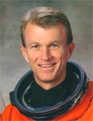

Lyndon B. Johnson Space Center
Houston, Texas 77058
|
National Aeronautics and Space Administration Lyndon B. Johnson Space Center Houston, Texas 77058 |
 |
Biographical Data |
||
Brent W. Jett, Jr. (Captain, USN, Ret.)
NASA Astronaut (Former)
PERSONAL DATA: Born October 5, 1958, in Pontiac, Michigan. Hometown: Ft. Lauderdale, Florida. Married to Janet Leigh Lyon of Patuxent River, Maryland.
EDUCATION: Earned a Bachelor of Science degree in Aerospace Engineering from the U.S. Naval Academy in 1981 and a Master of Science degree in Aeronautical Engineering from the U.S. Naval Postgraduate School in 1989.
ORGANIZATIONS: Association of Naval Aviation, U.S. Naval Academy Alumni Association, Association of Space Explorers.
SPECIAL HONORS: Graduated first of 976 in the Class of 1981 at the U.S. Naval Academy; Distinguished Graduate, U.S. Naval Test Pilot School, Class of 1995. Awarded the Legion of Merit, Distinguished Flying Cross, Department of Defense Superior Service and Meritorious Service Medals, Navy Commendation Medal, NASA Exceptional Service Medal, NASA Exceptional Engineering Achievement Medal, NASA Outstanding Leadership Medal, four NASA Space Flight Medals and various other service awards.
EXPERIENCE: Jett was designated a naval aviator in March 1983 and subsequently assigned to Fighter Squadron (VF) 74, flying the F-14 Tomcat. His squadron made overseas deployments to the Mediterranean Sea and Indian Ocean aboard the USS Saratoga (CV-60). While assigned to VF-74, he was designated as an airwing qualified Landing Signal Officer (LSO) and also attended the Navy Fighter Weapons School (TOPGUN). Jett was selected for the Naval Postgraduate School - Test Pilot School Cooperative Education Program in 1987. After graduation from the Navy Test School in June 1989, he worked as a project test pilot at the Carrier Stability Department of the Strike Aircraft Test Directorate, Naval Air Test Center, flying the F-14A/B/D, T-45A and A-7E. Jett returned to the operational Navy in September 1991 and was again assigned to VF-74, flying the F-14B aboard the USS Saratoga (CV-60), when selected by NASA for Astronaut Group 14.
Jett has logged more than 5,000 flight hours in more than 30 different aircraft and has more than 450 carrier landings.
NASA EXPERIENCE: Selected by NASA in March 1992, Jett reported to the Johnson Space Center in August 1992. In January 1996, Jett flew his first mission as the pilot of STS-72. A year later, he again served as pilot on STS-81. From June 1997 to February 1998, he served as NASA Director of Operations at the Yuri Gagarin Cosmonaut Training Center, Star City, Russia. Jett then commanded two shuttle missions: STS-97 in November 2000 and STS-115 in September 2006, both station assembly flights. A veteran of four space missions, he has traveled more than 17 million miles and logged more than 40 days in space. In July 2007, Jett retired from the Navy and became a NASA civil servant. From November 2007 to February 2011, he was Director, Flight Crew Operations at JSC. From March 2010 to January 2013, Jett was the Deputy Manager for the NASA Commercial Crew Program. He retired from NASA in January 2013.
SPACEFLIGHT MISSION SUMMARIES: STS-72 Endeavour (January 1996) was a 9-day flight during which the crew retrieved the Space Flyer Unit satellite (launched from Japan 10 months earlier); deployed and retrieved the OAST-Flyer satellite, and conducted two spacewalks to demonstrate and evaluate techniques to be used in the assembly of the International Space Station.
STS-81 Atlantis (January 1997) was the fifth in a series of joint missions between the U.S. space shuttle and the Russian Space Station Mir and the second mission involving an exchange of U.S. astronauts. In 5 days of docked operations, more than 3 tons of food, water, experiment equipment and samples were moved back and forth between the two spacecraft.
STS-97 Endeavour (November/December 2000) was the fifth American mission to build and enhance the capabilities of the International Space Station. STS-97 delivered the first set of U.S.-provided solar arrays and batteries as well as radiators to provide cooling. Three spacewalks were conducted to complete assembly operations while the arrays were attached and unfurled. A communications system for voice and telemetry was also installed.
STS-115 Atlantis (September 2006) successfully restarted the assembly of the International Space Station. During the 12-day mission, the crew delivered and installed the P3/P4 power module and deployed its two sets of solar arrays. These solar arrays doubled the station’s electrical power generation capability and currently provide one quarter of the power for the station. This assembly mission required robotics operations using both robotic arms (station and shuttle) and three spacewalks while docked to the ISS.
JANUARY 2013
This is the only version available from NASA. Updates must be sought directly from the above named individual.